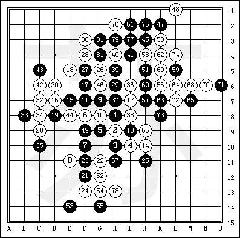
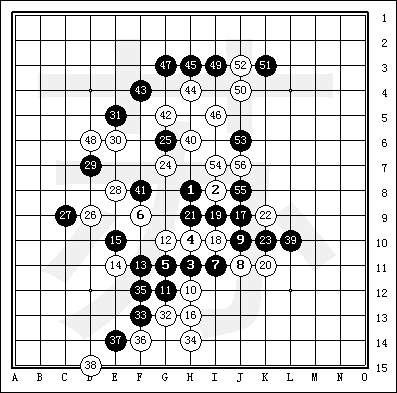
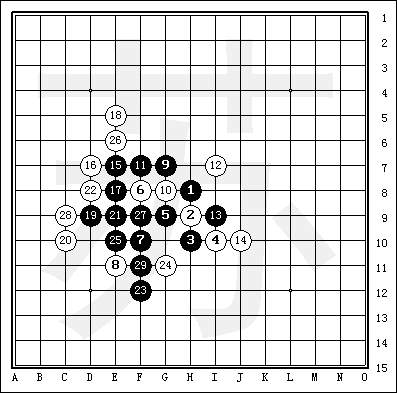

下棋满半年，今天在中游终于下赢职业等级了！
首页
五子棋交流
#1 下棋满半年，今天在中游终于下赢职业等级了！ 作者：cjh199 发表时间：2006-11-16 18:16:04
下五子棋半年了，一直只敢在中游的业余等级里混（没办法，因为段位低，有的职业等级看都不看你），今天终于碰上个职业二段，下了六局，5：1大胜，保持了三局，请各位指正
#2 Re:下棋满半年，今天在中游终于下赢职业等级了！ 作者：cjh199 发表时间：2006-11-16 18:18:37
这是第二局，我觉得他还是太轻敌了
#3 Re:下棋满半年，今天在中游终于下赢职业等级了！ 作者：cjh199 发表时间：2006-11-16 18:21:38
总觉得第一局里的寒星黑17有欠考虑，所以在第三局又开寒星
#4 Re:下棋满半年，今天在中游终于下赢职业等级了！ 作者：daiyue 发表时间：2006-11-17 13:58:03
恭喜恭喜。
#5 Re:下棋满半年，今天在中游终于下赢职业等级了！ 作者：news 发表时间：2006-11-18 9:37:13
 haha..jiayou
haha..jiayou
#6 Re:下棋满半年，今天在中游终于下赢职业等级了！ 作者：yidefei 发表时间：2007-1-17 13:56:07
他真的是职业的吗？或许他不在状态，或者没有认真下也说不定呀？
#7 Re:下棋满半年，今天在中游终于下赢职业等级了！ 作者：卓家公子 发表时间：2007-1-18 14:34:39
第三局对手有点弱，从棋力上来看有失职业级的水准。
#8 Re:下棋满半年，今天在中游终于下赢职业等级了！ 作者：xuexi1 发表时间：2007-1-18 18:35:16
祝贺，并继续努力：）
#9 Re:下棋满半年，今天在中游终于下赢职业等级了！ 作者：破网的蜘蛛 发表时间：2007-1-19 8:25:22
开寒星胜很正常的
#10 Re:下棋满半年，今天在中游终于下赢职业等级了！ 作者：gerbo 发表时间：2007-2-19 10:59:53
禾禾，我一直没去中游玩了，感觉那的人要不相当的弱，要不真的非常的厉害，下了职业初段，胜率66%多，没高手指点，下的没意思，出来很久了，天天泡论坛~希望加你QQ，我的是421299143，请留言给我
#11 Re:下棋满半年，今天在中游终于下赢职业等级了！ 作者：yuelee 发表时间：2007-3-10 9:28:03
游戏里的分数、胜率都不代表水平的。看棋本身比较有意义。。。